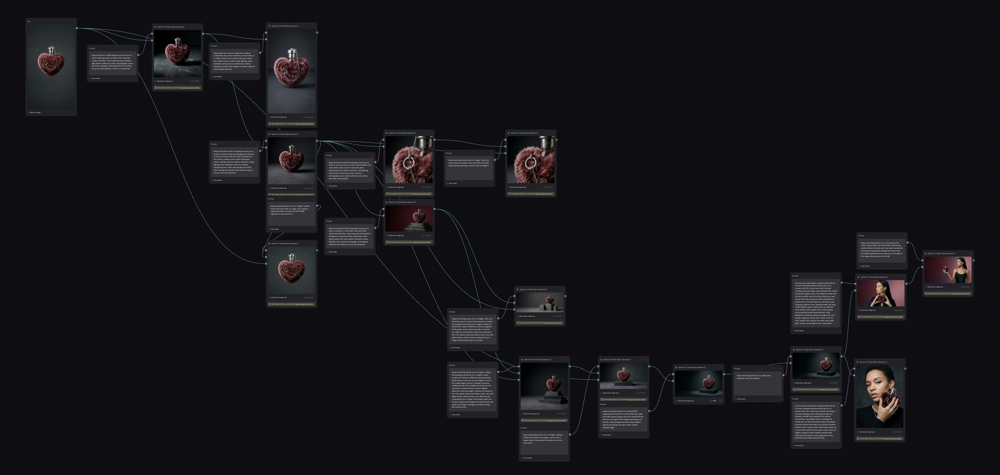
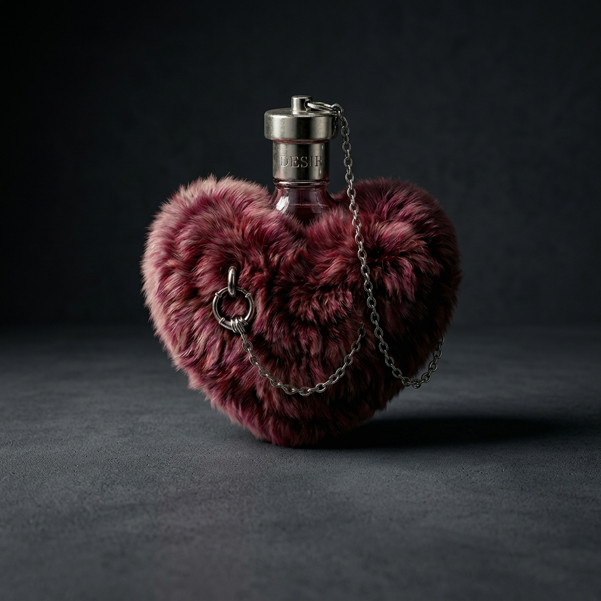
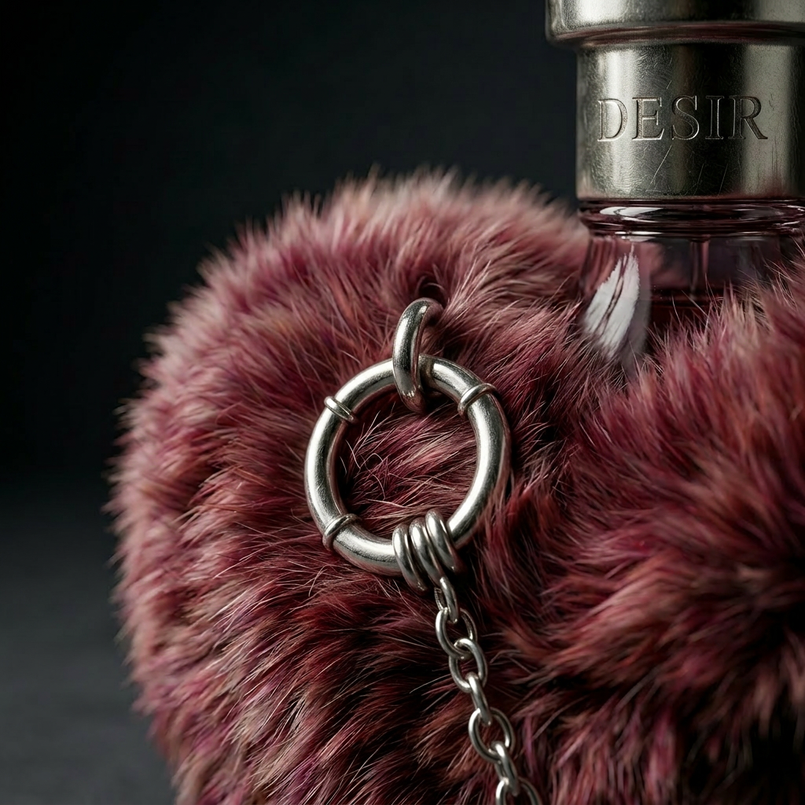
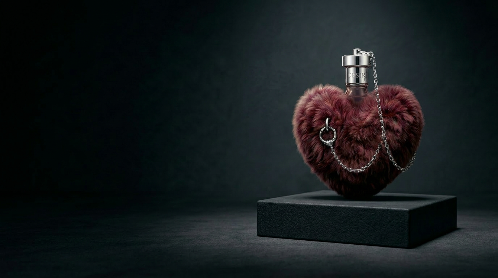

Creative Direction · AI Imagery
Desir
A fragrance concept and campaign system, art-directed and produced entirely through generative AI. The project tests whether disciplined direction and curation can compete with traditional production for a coherent brand world. Self-initiated project.
The Idea
Build a fragrance product visual campaign using AI to direct the creative and develop a coherent visual language across every asset. The goal was a set of images that feel like they belong to the same campaign and is scalable.
The Product
A heart-shaped bottle wrapped in faux fur, with a silver chain and a piercing-style hoop joining cap to body. The form holds a deliberate tension between soft and hard materials, and that contradiction informed the creative direction.

The Direction
Initial results leaned toward the expected fragrance look: soft pastels, florals, romantic light, glowing skin. The direction moved deliberately away from that toward something darker and more editorial. Low-key light, matte skin, a neutral palette, restrained styling, documentary stillness over glamour.
Every element (backdrop, material, casting, pose, light angle, lens character) was specified, and carefully prompted to match the creative direction.


The Challenge
The hardest part was keeping everything consistent: the same bottle, a coherent cast of similar models, the same styling and world across every shot. Holding that coherence took a clear creative direction up front and a careful prompt for each frame, so the results stayed on brief without endless iteration.


The Process
Each frame started from a defined intention: the mood, the light, the framing, the styling. Some attempts missed and were discarded, but the careful starting point kept iterations low. The thumbnails below show how the direction took shape across the early rounds.


To get tighter control over the bottle's identity across shots, I moved to Weavy. Locking the DESIR bottle as a reference image and pinning the model and style parameters made it possible to direct specific outcomes.

I produced close-ups and alternate compositions clean enough to drop type onto, usable for ads, social, and packaging mockups without retouching. The brand world held together across formats, which was the actual test.



Conclusion
The result holds together as naturally as a traditional shoot. Used this way, AI can make production faster and more affordable, while opening up creative options that would be difficult or impossible to stage in reality.